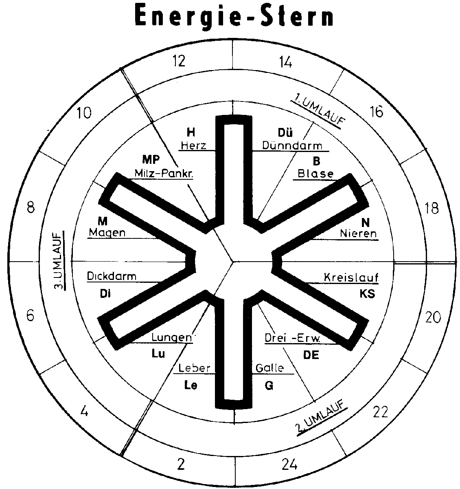

Chronologie
Die Gunst der Stunde
Hell und Dunkel bestimmen, wann wir aufwachen und wann wir müde werden. Aber auch Pflanzen, Tiere und sogar Bakterien leben nach einem bestimmten Takt. Der Mensch ist zu jeder Stunde des Tages ein anderer, sagen Chronobiologen (chronos/griechisch = Zeit). Tag für Tag, Stunde für Stunde steuert die innere Uhr unser Leben. Aber nicht nur der Mensch selbst folgt der Uhr, auch seine Organe werden von körpereigenen Rhythmen bestimmt. Jedes Organ hat während des Tages seine Höchstleistung zu erbringen, hat seine schmerzunempfindliche und seine besonders schmerzempfindliche Phase oder ist sogar besonders krankheitsanfällig. Nach der chinesischen Medizin ist jedes Organ einem Energiestrom unterworfen, der im Laufe von 24 Stunden jeweils eine Hoch- und eine Tiefphase beschert. Zu bestimmten Zeiten arbeiten die Organe etwa 2 Stunden lang besonders wirkungsvoll, gönnen sich jedoch anschließend sofort eine Erholungsphase. Aufgrund seiner Erkenntnisse, die er aus der chinesischen Medizin schöpfte, entwarf Willy Penzel, der Entwickler der Akupunkt-Massage nach Penzel® den Energie-Stern, der auch als Meridian-Uhr bezeichnet wird.

Die Energie fließt im Uhrzeigersinn durch alle 12 Meridiane (Energie-Leitbahnen). Im Energie-Stern wird graphisch dargestellt, wie die Lebensenergie innerhalb eines Tages alle Meridiane und Organe des Körpers im Uhrzeigersinn - wie die Erde um die Sonne - durchströmt. Jeder Meridian entfaltet für jeweils 2 Stunden seinen Höchstwert an Energie. Etwa alle zwei Stunden befindet sich also immer einer der 12 Meridiane in einem Zustand der Energiefülle, während sich der jeweilige Oppositionsmeridian - der dem betreffenden Meridian gegenüberliegt - im Zustand der Energieleere befindet. So sagt uns die Organuhr recht verlässlich, welcher Meridian im Augenblick maximal von Energie durchflossen wird und welcher sich zur Zeit im Ruhestand befindet.
Das bedeutet beispielsweise:
- In der Zeit von 7-9 Uhr morgens befindet sich der Magenmeridian auf seinem Energiehoch. In dieser Zeit ist der Magen besonders gut für die Aufnahme von Nahrung vorbereitet. Dagegen befindet sich der Kreislaufmeridian jetzt in seinem energetischen Minimum.
- Um die Mittagszeit zwischen 12-14 Uhr entfaltet das Herz seine maximale Energie. Die meisten Herzinfarkte treten jedoch im Stadium der Energie-Leere, das heißt nachts und morgens auf.
- Gesund ist ein Mensch, dessen Meridiane gleichmäßig mit Energie gefüllt sind.
Nachgedacht
Der alte Arzt spricht Deutsch. Der junge Arzt spricht Englisch. Der gute Arzt spricht die Sprache des Patienten.
Werde erst Mensch, bevor Du Arzt wirst. (Voltaire)
Der Mensch ist die beste Medizin für den Menschen. (aus China)
Ich brauch einen Menschen, um einen Menschen zu heilen. (Afrikanisches Sprichwort)
Gesundheit ist ein Geschenk, das man sich selber machen muss. (Schwedisches Sprichwort).
Es gibt Tausend Krankheiten, aber nur eine Gesundheit. (Schopenhauer)
Gesundheit ist das höchste Gut des Menschen, nur vergessen das Viele, weil man Gesundheit nicht spürt, wenn man sie hat. (Hannelore Kohl)
Die beste Uhrzeit für die Einnahme von Medikamenten nach der Chronobiologie: Zu welcher Tageszeit ein Medikament eingenommen wird, ist alles andere als egal. Die Konzentration vieler Hormone, der Blutdruck, sogar das Schmerzempfinden verändert sich innerhalb von 24 Stunden. Biologische Rhythmen beeinflussen Aufnahme, Stoffwechsel, Ausscheidung und die Wirkung eines Arzneimittels, so Professor Lemmer, Uniklinik, Heidelberg. Bei der Medikamenten-Einnahme kommt es deshalb auch auf den richtigen Zeitpunkt an.
Bio-Rhythmus
| Erkrankung | Uhrzeit |
| Herz | Spätabends und früh morgens einnehmen. Medikamente zur Ausschwemmung (Diuretika) wirken abends meist besser als morgens. |
| Hypertonie | Morgens, mittags, um den Blutdruckanstieg abzufangen. Nach dem Erwachen steigt der Blutdruck beim Gesunden stark an und erreicht gegen Mittag den Höhepunkt. Gegen 19 Uhr sinkt er. Beta Blocker senken morgens den Blutdruck besser und schneller als die gleiche Dosis zu jeder anderen Tageszeit (*). |
| Hypotonie | Morgens, mittags um den Blutdruck beim Patienten anzuheben. |
| Asthma | Abends, Asthmaanfälle ereignen sich meist nachts, weil die Lunge dann ihre Funktion reduziert. |
| Nierensteine | Abends, Nieren sind nachts am wenigsten aktiv. Sie scheiden dann weniger Flüssigkeit aus, so dass die Konzentration von Salzen im Harn ansteigt, wodurch sich Steine bilden können. |
| Depression | Abends, Stimmungsaufhellende Mittel wirken dann schon in kleinster Dosis und man ist dann tagsüber auch weniger müde. |
| Magen | Abends, Medikamente gegen Magengeschwüre wirken jetzt so gut wie zu keiner anderen Zeit. Eine einmalige abendliche Dosis hält 24 Stunden an. |
| Rheuma und Arthrose | Morgens früh und spät abends: Bei den Frühaufstehern (Lerchen) sind die Schmerzen zwischen 6 und 12 Uhr am heftigsten. Bei den Spätaufstehern (Eulen) sind die Schmerzen zwischen 15 und 21 Uhr am heftigsten. |
| Schmerzen | Morgens früh und spät abends: größte Schmerzempfindung ist morgens, geringste von Zähnen und Haut ist gegen 14 Uhr (Zahnarzttermin). Das Bohren tut dann nur halb so weh. |
| Diabetes | Abends: Die Leber ist kein Morgenmuffel. Bereits ab 4 Uhr arbeitet sie emsig, um dem Körper Glukose als Energieträger zur Verfügung zu stellen. Ab da steigt auch der Blutzucker an. Medikamente vor dem Schlafengehen nochmals spritzen bzw. einnehmen, um gegen den nächtlichen Blutzuckeranstieg gewappnet zu sein. Insulinspritze: 4 Uhr nachts und 16 Uhr nachmittags. Der Zeitpunkt ist zwar unpraktisch, aber prinzipiell ist das Insulin umso wirksamer, je früher am Morgen man es nimmt. |
| Immuntherapie | Vormittags: Um 7 Uhr ist unser Immunsystem besonders fit und für unterstützende Maßnahmen am aufnahmefähigsten. Sie haben dann die höchste Wirksamkeit bei relativ geringen Dosierungen. |
| Entzündungen | Abends |
| Krebs | Abends, Zytostatika werden dann besser vertragen. Die Heilungschancen bei der Strahlen- und Chemotherapie sind bis zu 6 x höher, wenn dabei der interne Rhythmus der Krebszellen befolgt wird, das heißt wenn die Behandlung dann erfolgt, wenn diese Zellen ihr tägliches Temperatur-Maximum erreicht haben. |
| Geist | Vormittags von 8-12 Uhr ist die beste Zeit zum Denken. |
(*)Hinweis zu Hypertonie: Neuere Studien (European Heart-Journal) liefern Hinweise, dass Blutdrucksenker abends oft besser wirken, zumal ernste Erkrankungen, wie Schlaganfall oder Herzinfarkt vor allem mit erhöhten, nächtlichen Werten in Zusammenhang stehen (Rhein-Zeitung vom 24. Oktober 2019). Ausprobieren!
Resümee: Mit Kenntnis dieser Organuhr können Medikamente effektiver eingesetzt werden. Die Gepflogenheit, Präparate 3 x täglich zu verabreichen, ergibt keinen höheren Grad an Sicherheit, sondern begünstigt nur das Auftreten von Nebenwirkungen.